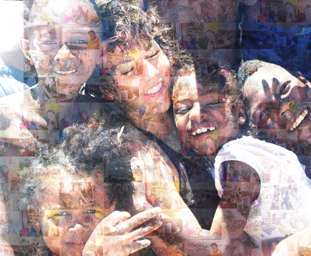

Nous découvrir
Née en décembre 2018, l’association belge Tiako asbl a été crée dans le but d’offrir un soutien et un accompagnement au foyer Akany Avotra
Akany Avotra
- Situé à Fort Dauphin (sud de Madagascar)
- Encadre et scolarise une cinquantaine d’enfants et de jeunes.
L’intention de Tiako
- Avoir un cadre administratif et juridique pour poursuivre les actions et les promouvoir dans la mesure du possible
- Rémunérer des personnes investies dans le projet sur place
- Réaliser différentes actions et soutenir des projets sur place
Les activités de Tiako se divisent en trois branches
Le soutien
l’accompagnement et l’autonomisation d’enfants et de jeunes en vue de leur permettre de déployer leur potentiel d’adulte en devenir (par exemple sur les thématiques santé, éducation, scolarité, situations familiales)
L’organisation
la mise en œuvre d’actions et d'événements divers pour financer son but social
Le partage
la sensibilisation et le partage entre continents
La fondatrice de Tiako

Maude
a séjourné à Akany Avotra à plusieurs reprises.
- Durant son premier voyage, en 2012, elle a séjourné deux mois dans le foyer et s’est imprégnée de la réalité locale, de la culture malgache, des routines quotidiennes du foyer.
-
En revenant en Europe, elle a réalisé qu’elle pouvait, par des petites actions et depuis la Belgique, continuer à soutenir l’Akany Avotra et ses jeunes. Un concert, une présentation dans un bar, une récolte de matériel…
Rapidement, plusieurs opportunités lui ont permis d’envoyer à Madagascar des objets de première nécessité, du matériel scolaire, de l’argent avec des instructions sur des projets assez concrets à réaliser etc. - Maude est retournée sur place à deux reprises, en 2014 et en 2017-2018, et a séjourné à l’Akany Avotra pendant 3 et 6 mois. C’est après ce dernier séjour qu’elle a eu l’idée de monter une structure juridique : c’est la naissance officielle de l’asbl Tiako d’ici & d’ailleurs.